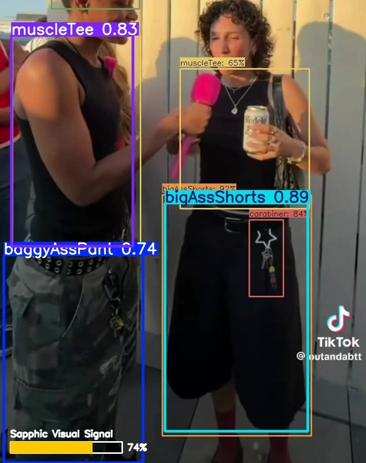
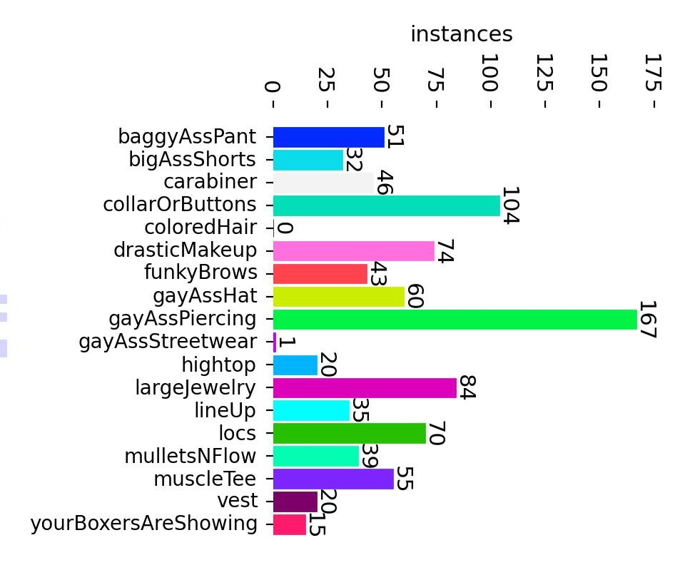
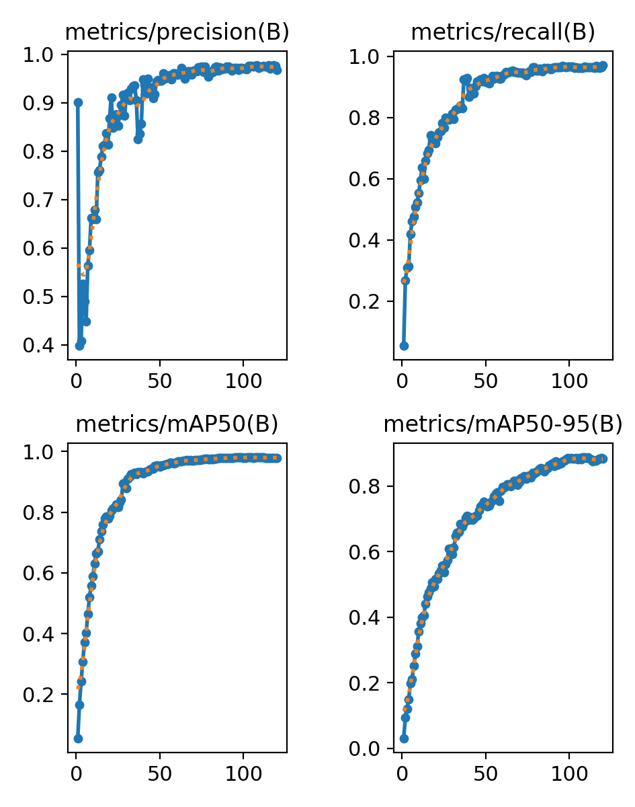
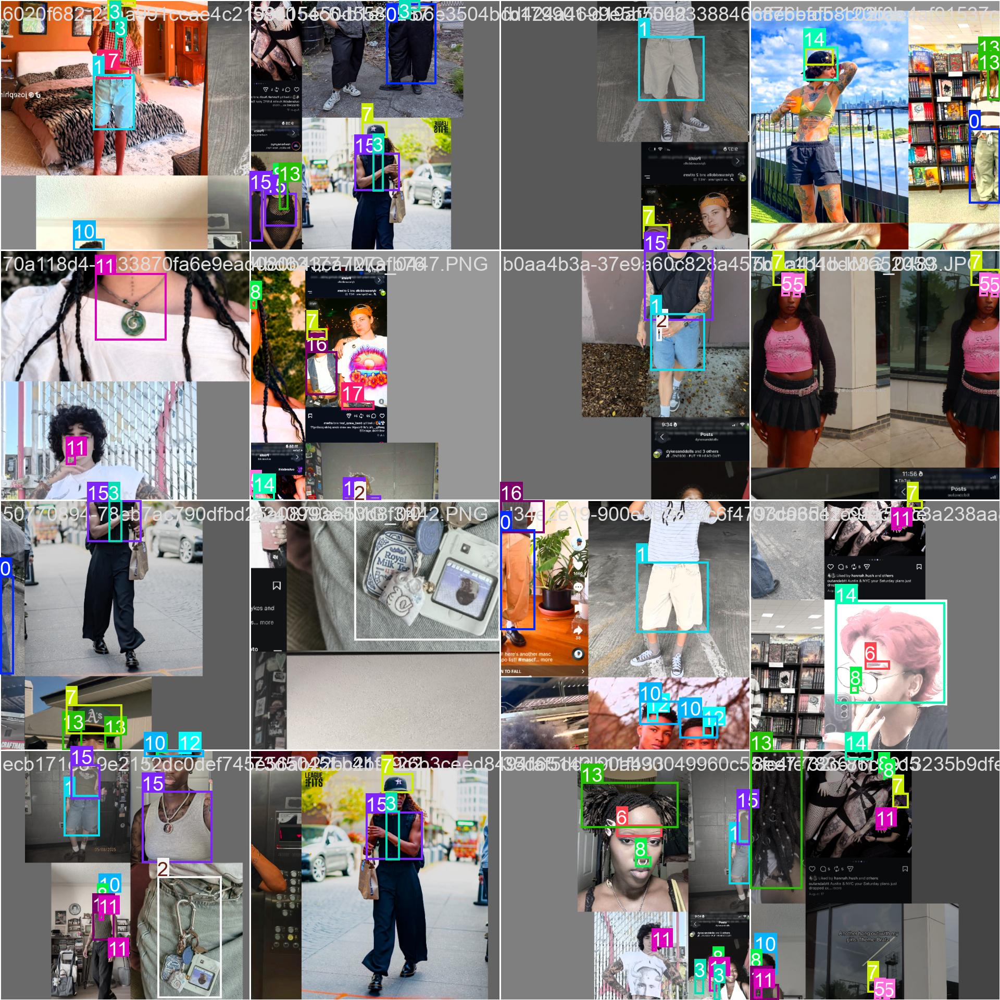
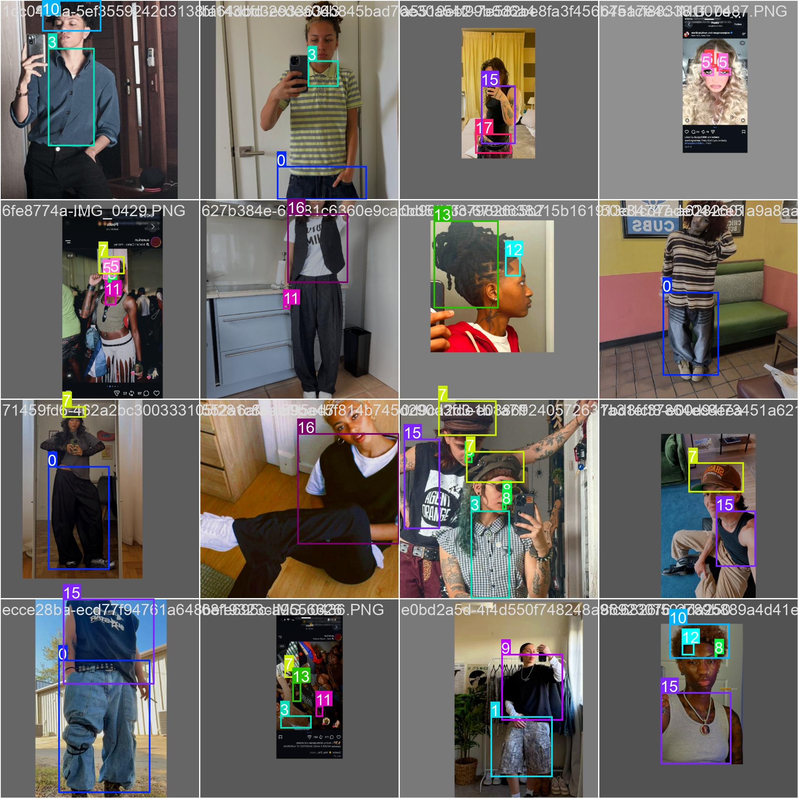
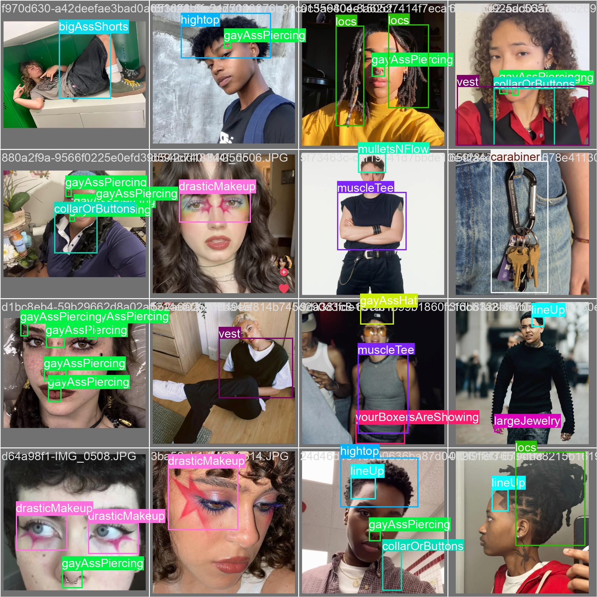
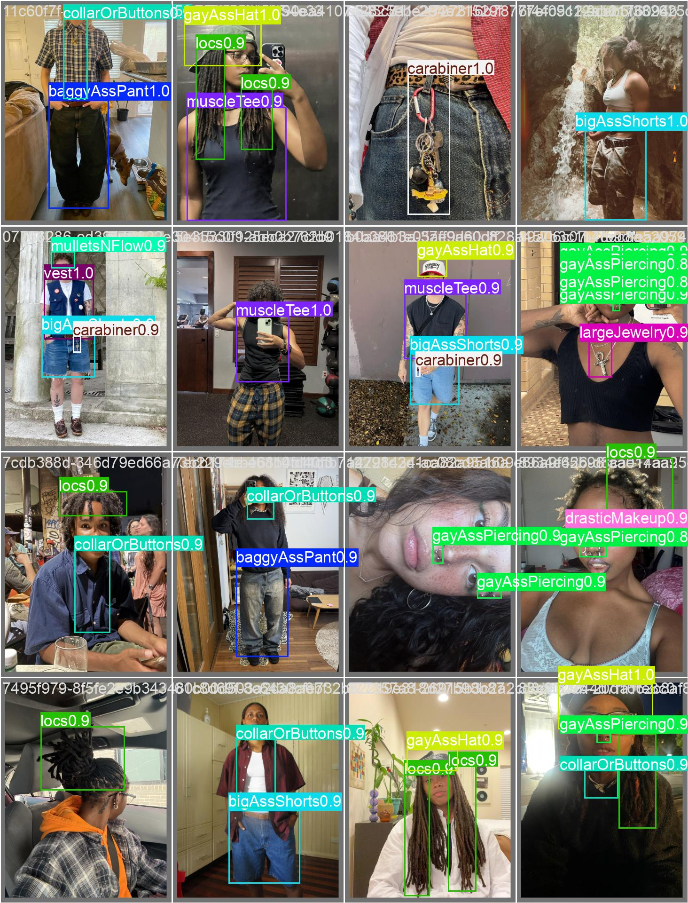
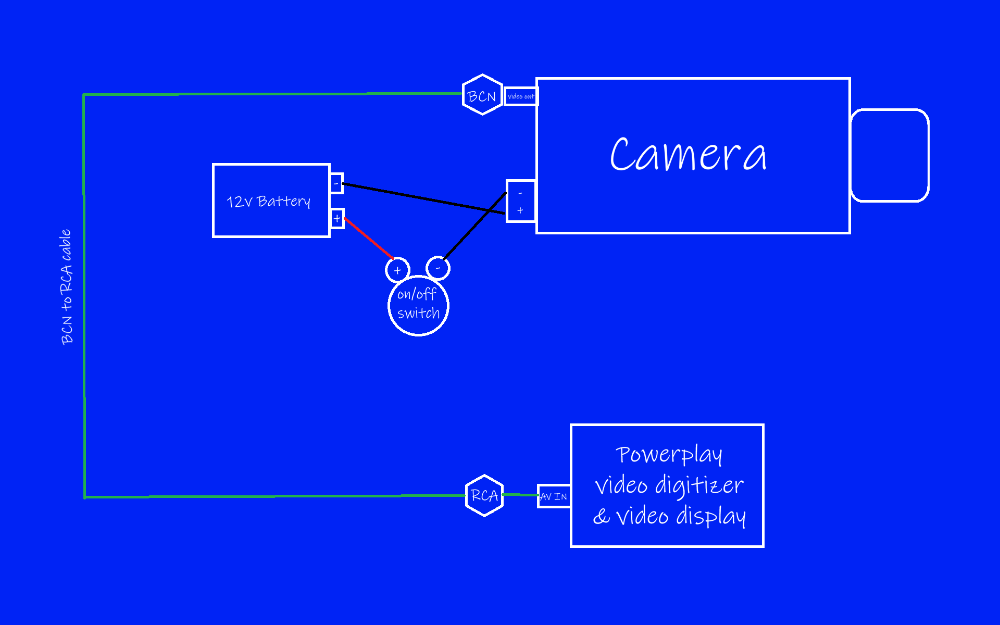
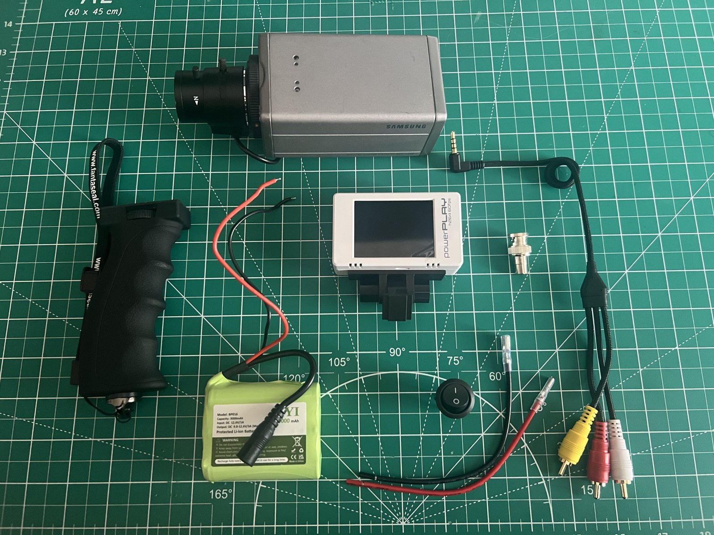
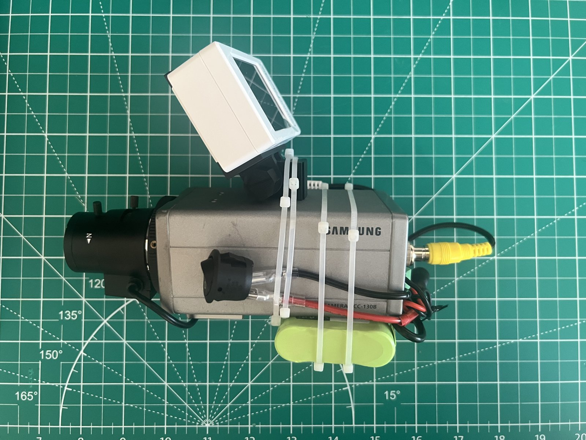

court@archive:~$ ls -t work/customTrainedGaydarModel/_
Custom YOLO model trained to detect sapphic visual signals
Using a custom dataset, I trained a YOLO object recognition model to identify culturally and socially defined indicators that someone is queer, specifically sapphic. A real working "Gaydar" if you will.

Background
Photography has been a huge part of my life thus far. For the last 10 years, it has been more than a hobby, but my main form of artistic expression; a job; a side hustle; a purpose. For the past 3 years, my photography has been focused on portraiture and event photography in queer spaces, specifcially Black queer spaces. But lately, I've been feeling conflicted about the ethics of photographing people in these spaces, and the ethics of sharing those photos online. As a creative technologist and someone working in tech, I am hyper aware of the speed in which new technological developments are being made, the speed in which said developments are being adopted and ways that technology can be used maliciously.
Data collection and surveillance capitalism under the government's, and companies like Flock and Palintir, guise of national security is exacerbated by the very consensual use of social media. It is common knowledge that this technology has been used to target and oppress marginalized communities. Many queer communities today stand on the foundations of use of copious amounts of labels and unspoken (but now spoken thanks to social media) rules and definitions. AI, Machine learning and computer vision are built on the ability to take labels and definitions, apply them to data, and recogonize patterns or make predictions. Socially the inate or developed ability to apply these labels, cues and definitions and sense someone's queerness is often referred to as a "gaydar".
The initial idea to explore training a model to mimic a human's gaydar developed wholesomely. I thought back to online "Am I gay?" quizzes and the fun or dread taking them depending on your own self-perception. I envisioned the gaydar set up a club or party and people cheering upon being labelled as a "dyke" or x% gay-looking. I envisioned it bringing people gender euphoria. But then I realized it could bring someone gender dysphoria. And I began to consider the harm of something like this not only in the hands of the community itself, but also if it were to fall into the hands of those outside of the queer community.
I decided to continue pursuing this work to examine the tension between the need for visibility and harmful systems of surveillance. The goal here is to use pieces of technology, old and new, that have contributed to America’s current surveillance state, and from that, build a camera rig that can place labels on queerness, highlighting both the commonality and pride that come from using labels within queer spaces and the harm that comes from using labels outside of queer spaces. With that camera, the final outcome will be the creation of a series of images and videos.
Process
I collected a dataset of about 300 images using pintrest, instagram and tiktok. Using these images, I defined a set of labels that largely highlighted fashion choices, hair styles, accessories, piercings and makeup associated with lesbians and queer women.

I used Label Studio to label the images then downloaded the labeled dataset. Using this Ultralytics tutorial, I trained a custom YOLO26L model. I edited the code to implement a k-fold training and testing method to get a better understanding of the model's performance.





Once the model's mAP50 scores were satisfactory, I deployed the model locally and ran videos from the internet through the model to see how it performed on unseen data.
Next Steps
In parallel to the model training, I am working on a custom camera rig that turns a surviellance camera into a camcorder. This camera rig will be used to capture the actual footage that will be run through the model to create the final images and videos. Currently the project works in 2 parts, the camera records videos and I put those videos on my laptop to run through the model. But the future goal is to have the whole set up connected and live using a raspberry pi.



Tools used:
Python · YOLOv8 · Ultralytics · Label Studio · OpenCV · 12V Li-ion battery pack · 12V on/off switch · Samsung CCTV Camera · Powerplay RCA to USB video digitizer